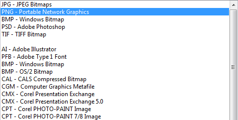

Проблема с экспортом в растр
andy / 22.11.2011, 16:16/00:41
Форум:
Версия программы:
13.0.0.739 (sp2)
Почему-то при экспорте (например в tiff), если явно мышкой не клацнуть по tiff, экспортирует как cdr (при этом выбран tiff).
Почему-то при экспорте (например в tiff), если явно мышкой не клацнуть по tiff, экспортирует как cdr (при этом выбран tiff).
Какой корел-то?
Такого не замечал, но меня при экспорте раздражает что TTF и TIF очень похожи по начертанию и не раз пытался сохранить в TTF вместо TIF. Написали бы разработчики tif строчными, ерунда, а одним неудобством меньше. А лучше всего вообще наиболее частые форматы в которые экспортируешь поднимать к началу списка и выделять жирным.
Вообще то, это уже давно есть:

какой корел сверху написано, и вообще не про это спрашивал
andy, честно говоря, не понял вашего вопроса. Куда клацнуть мышкой? И, если из списка возможных форматов выбран TIF, то как получается, что экспортирует в CDR?
Ну вот, мечты сбываются =)
А, я понял, кажется припоминаю такое, просто я очень давно не работаю в Х3. Ну что сказать, переходи на более новую версию, давно пора
причем непонятны причины когда это появляется, создал файл, сразу экспорт - все как надо, потом сохраняюсь CDR, опять делаю экспорт и если не ткнуть расширение, то пытается экспортировать cdr
разобрался, когда в винде отображаются расширения файлов, то такая байда и выходит.